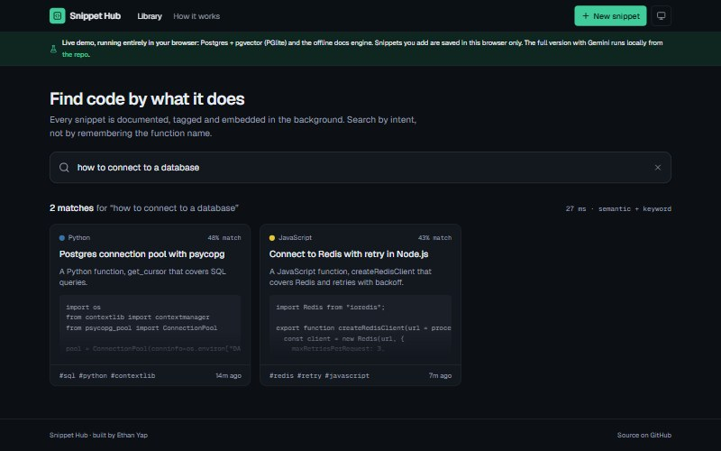
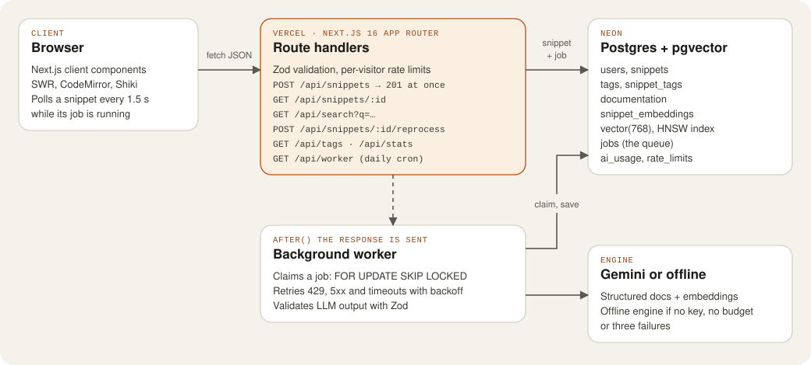

Work / Case study 03
AI Code Snippet & Documentation Hub
Paste a piece of code and it gets documented, tagged and embedded, so you can find it later by describing what it does instead of remembering what you called it.
- Role
- Solo: app, database, worker and both deployments
- When
- Built Oct 2026
- Size
- 9 tables, 73 tests, 768-dimension vectors
- Hosting
- Vercel + Neon + Gemini, browser demo on GitHub Pages

The problem
Useful snippets end up scattered across old projects and notes, and finding one again means remembering the exact name you gave it. I wanted a library where you search by meaning, such as “how to connect to a database”, and where every snippet comes with a short write-up of what it does.
The catch is that writing documentation and embeddings with a language model takes seconds, the model sometimes returns output that doesn’t fit, and the public version runs on a free API quota that strangers could easily use up.
My role
A personal project, built alone: the Next.js app, the database schema, the background worker, the search ranking, the tests and both deployments.
Stack
- App
- Next.js 16 App Router with TypeScript; route handlers are the API
- Database
- PostgreSQL with pgvector (Neon in production, PGlite locally and in the browser demo)
- Language model
- Gemini structured output and embeddings, validated with Zod, with an offline fallback engine
- Front end
- React client components, SWR, CodeMirror and Shiki
- Testing
- Node’s test runner through
tsx, on in-memory Postgres - Delivery
- GitHub Actions, Vercel (with a daily cron), GitHub Pages
Architecture
Saving a snippet and documenting it are two separate steps. The route handler stores the snippet and a job, answers straight away, and a worker picks the job up after the response has been sent.

snippets, tags, snippet_tags, documentation, snippet_embeddings (vector(768) with an HNSW index), jobs, users, ai_usage and rate_limits. Open the diagram full size.
The hard part: never making anyone wait for the model
A model reply takes seconds, so calling it inside the request would make saving a snippet as slow as the slowest reply. I split the work: POST /api/snippets validates the body with Zod, saves the snippet and a row in jobs, and returns 201. Next.js after() then runs the worker once the response is on its way.
I didn’t want to add Redis just for a queue, so the queue is a Postgres table. The tricky part is claiming a job safely when several serverless instances run at once. FOR UPDATE SKIP LOCKED makes each worker skip rows another worker has locked, so two can never claim the same job, and a job whose worker died is reclaimed after two minutes.
src/lib/worker.ts
UPDATE jobs
SET status = 'running', locked_at = now(), attempts = attempts + 1, updated_at = now()
WHERE id = (
SELECT id FROM jobs
WHERE (status = 'queued' AND run_after <= now())
OR (status = 'running' AND locked_at < now() - interval '${STALE_LOCK}') -- 2 minutes
ORDER BY run_after, id
LIMIT 1
FOR UPDATE SKIP LOCKED)
RETURNING id::int AS id, snippet_id, attemptsModel output is never trusted as-is. Even in structured-output mode, every reply is validated with Zod. Rate limits, timeouts and server errors back off and retry (5 s, then 20 s), and after three attempts the offline engine fills in, so a snippet never gets stuck.
Protecting a free quota on a public site
The counters live in Postgres so every instance shares them: per-visitor limits keyed by a salted IP hash (15 new snippets an hour, 5 regenerations an hour, 60 searches a minute), a daily budget of model calls for the whole site, and a circuit breaker that stops all instances calling the model after a 429. When the budget runs out, new snippets are documented offline and search falls back to Postgres full-text search.
What I tested
73 tests in four files, with no database server or API key needed: each integration file boots its own in-memory Postgres with pgvector and the real schema.
- Validation: defaults, language detection, size limits, rejected bodies, parameter clamping and UUID checks.
- Language detection for 12 languages, including regressions for SQL once read as a Dockerfile and C# LINQ once read as TSX.
- The offline engine: 768-dimension hashed embeddings are unit length and deterministic, and related text lands closer than unrelated text.
- The queue and search:
SKIP LOCKEDnever double-claims, stale locks are reclaimed, backoff is respected, every snippet ends up documented, tagged and embedded, hybrid search ranks the right snippet first, and the daily budget, cooldown and rate limits work.
How it ships
- CI: GitHub Actions runs type checking, ESLint and the 73 tests on every push to
mainand every pull request. - Live app: Vercel deploys
mainto the Singapore region with Neon Postgres. A daily Vercel Cron call to/api/workersweeps up any job left behind. - Browser demo: a Pages workflow type-checks, lints and builds a static export. There, the client’s
/apicalls go to a module that runs the same schema, worker and SQL on PGlite with pgvector in the browser, saved to IndexedDB, using the offline engine because a model key can’t be shipped in a public page.
What I’d do next
- Add sign-in so people can keep private collections. Snippets are currently tied to an anonymous visitor id.
- Measure search quality on a fixed set of questions before changing the 80/20 mix of vector and full-text scores, instead of tuning it by eye.
- Add end-to-end browser tests for the snippet page’s live status updates.